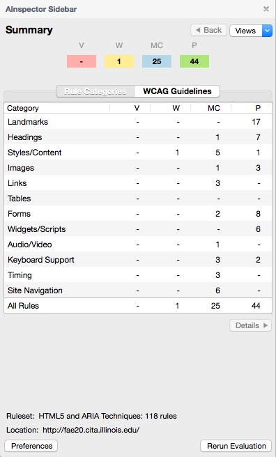
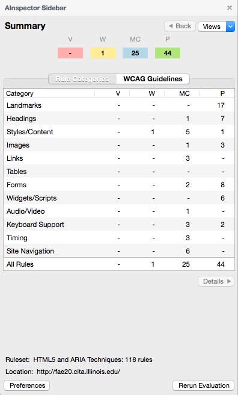

AInspector Sidebar
Web accessibility evaluation tool for Firefox based on WCAG 2.0 and ARIA
To install the latest version, v1.1.1, please visit the Mozilla Add-ons page.

Web accessibility evaluation tool for Firefox based on WCAG 2.0 and ARIA
To install the latest version, v1.1.1, please visit the Mozilla Add-ons page.
